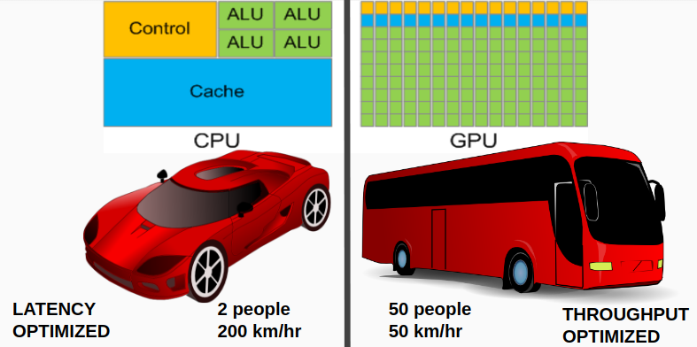

GPUバーサーカーGLSL
この章では、GLSLの使い方を紹介します。
GLSLとは？
GLSLは「OpenGL Shader Language」の略称です。GPUで実行される言語の一種です。
どうやって学びますか
The book of shaders（オンライン無料）の閲覧をお勧めです。
GPUレンダーのメリットは？
ここで、比喩でCPUをスーパーカー、GPUをバスとしましょう。

もし、少人数（二人ぐらい）の人を運輸しようとすれば、スーパーカーの方は早くていいでしょう。（高速で複雑な演算をします）
さて、多人数の場合はどうでしょうか。バスのほうはスピードが遅いが、一気に多数の人を運搬できるというメリットが大きくなって、このケースではバスのほうがかなり有能だと考えてもいいでしょう。（同じ演算を一斉にします）
普通我々の耳にした多くの言語（C/C++、Java、Python）はCPUで実行されています。 GLSLは、GPUで実行できるようにデザインされています。
画像を一枚レンダーしようとするときに、GPUは大勢の「ワーカー」を雇って計算方法と入力値を与えて働かせるというイメージを持ってもいいでしょう。
GLSLを徹底的に勉強したい方に対して、こちらのサイト：shadertoy.comをお勧めします。面白そうなコードを見つけてそれをいじることよりわりと速く上達するので、ぜひご活用ください。
詳細（これ以降の内容はベテラン向けです）
GLSLコードがOpenGLに発信される前に、PixelsWorldは、いくつかの前置きコードと後置きコードを連結する処理を行います。
- PixelsWorld V3.0.0 は #version 330 core を使います。
ここで 前置きコードと後置きコードが記載されています。